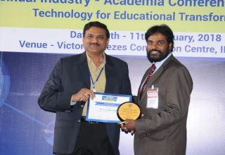

.png)


Sreenidhi Institute Of Science and Technology
Because life is all about taking right decisions
CSE vision and Mission
vission:
- To emerge as a leading department in Technical Education and Research in India in Computer Science and Engineering with focus to produce professionally competent and socially sensitive engineers capable of working in global environment.
Mission:
- To promote strong research culture in graduates for life long learning, to explore the frontiers of knowledge and present at technical fora/publish in Journals at national/international level
- To inculcate team work, leadership, professional ethics, use of modern tools, IPR issues so that graduates are encouraged to obtain patents and respond to competitive global environment.
- To be a continuous learning organization by developing strong liaison with Academia, R & D institutions and Industry for exposure in practical aspects of engineering and providing solutions to the industrial and societal problems for sustainable development.
- To train the students in the fundamentals of Engineering, Science and Technology by providing good academic environment to pursue undergraduate, Post graduate and Doctoral programmes in chosen fields of Engineering and Technology for a successful professional career.

Dr. Aruna
Varanasi
Professor & HOD CSE Dept.
Greetings All!!
On behalf of my colleagues, I am delighted to welcome you to the Department of Computer Science and Engineering.
From its modest beginnings with an intake of 40 students in the under-graduate program of B.Tech. Computer Science and Engineering in 1997, it has become one of the most strongest and dynamic departments in the college and the computer science field with the distinguished and committed faculty members. The Computer Science and Engineering (CSE) department is dedicated in imparting quality education through well-designed and periodically upgraded curriculum in tune with the challenging software needs of the industry.
The intake currently is 300 in B.Tech. (CSE) Programme. The department is also successfully running two post-graduate programmes: M. Tech. (Computer Science and Engineering) and M.Tech. (Computer Science) with an intake of 24 each. There are eighteen Computer Laboratories in the department with minimum of 34 well configured computer systems. The computer laboratories are equipped with state of the art facilities meeting the standards and well maintained by dedicated and competent teaching and non-teaching staff.
The single largest department in the entire Institute, Computer Science and Engineering is now home to several eminent and new faculty members, having rich experience in academics, industry and R&D. The department has grown to almost 70 faculty members who provide leadership and expertise in several areas of computer science and engineering.
Dr.T.V. Rajini Kanth
Professor, CSE Dept
Dr. T. V. Rajini Kanth has obtained his Ph.D. degree in C.S.E. branch from Osmania university, Hyderabad in July, 2008 and M. Tech.(C.S.E.) degree from Osmania University, Hyderabad in January, 2001. His specialization area in research is “Spatial Data mining”. He obtained his PGDCS degree from HCU, Hyderabad in 1996. He received his M. Sc. (Applied mathematics) degree in the year 1989 from S.V. University, Tirupati as University Ranker. He is currently working as professor in CSE, and also Dean R&D at SNIST, Hyderabad. His total teaching experience is 25 years. His writings have appeared in numerous Professional conferences and Journals (International journals-56, national Journals-3, International conferences- 28, national conferences-3, Total = 90. His papers got many citations. Academic Society for computer systems and Information Technologies certified that his Paper titled “Design and Analysis of Novel Similarity Measure for Clustering and Classification of High Dimensional Text Documents” has been rewarded with the CRYSTAL CUBE PRIZE for best paper award of International Conference on Computer Systems and Technologies - CompSysTech’14, from Permissions@acm.org. CompSysTech'14, June27-28 2014, Ruse, Bulgaria. He has Produced 13 Ph.D. Research Scholars (5- JNTUH, 5-ANU, 3-JNTUA). He has received seminar grants from AICTE and DST organizations. Reviewer for many International Conferences like ICACM-2011, ICACM-2013, ICRSKT, ITQM, ICCCT etc., He has also received UGC Project Grant as a Principle Investigator and AICTE project grant as Co-Principle Investigator. He is a Review Committee Member Editorial Board member for 20 International Journals namely IJAEGT, IJAC, JDECS, IJEAT, IJAENT, etc., His current research area interests include Image processing, Data Warehousing & Mining, Spatial data mining, web mining, Text mining and Robotic area etc. Presently guiding research students in the research areas like Spatial data mining, Web mining, image Processing and Text mining. He has conducted two International conferences namely ICACM-11, and ICACM-13 as a Convener and also acted as session chair for many conferences like ICACT-08, ICACM-11, and ICACM-13 organized by GRIET, ICRSKT-2014, 66th CSI International Conference-2014 – Organized by JNTUH, ICCCT-2014 in association with IEEE – organized by Osmania University, 2nd World Conference on Applied Sciences, Engineering & Technology (WCSET 2013) organized by GITAM, Hyderabad. He was convener for Pragnya-08, a national level technical fest. He also acted as a Nodal Officer for academics, TEQIP. Apart from that many National level ROBO workshops were conducted namely RoboTrix, eTrix, iTrix, LogiTrix, VisionTrix and Haptic Robotic arm in association with IIT Bombay and Technophilia etc. He guided around 60 projects at B.Tech. and M.Tech. level and also developed some of them as products like Emolument management system, Mobile based automation and gamming projects, Web crawlers project, Office automation projects, Vision based Robo projects and Stegonography projects, etc., His Robo projects were displayed at 2nd Annual IT summit held at HICC, Hyderabad and was appreciated by Hon. IT Minister Ponnala Lakshmaiah. He is presently guiding (supervisor & co-supervisor level) many Ph.D. scholars at various universities namely JNTUH, JNTUK, JNTUA and ANU. He was called for around 60 AICTE sponsored TEQIP workshops as resource person in the areas like Image processing, Big Data Analytics using R, Digital India etc. A guest Lecture was given on Image processing Applications using Morphological Operations at MSCME in 2015. ESCI has invited him to give guest lectures on Digital India at Andhra University, Big Data Analytics for Banking, Insurance and Financial Sectors at C R Rao AIMSCS, HCU Hyderabad campus, etc. He has Life Membership in ISTE & CSI apart from a membership in IEEE.
Paper entitled,“Image Information Retrieval based on Edge Responses, Shape and Texture Features using Data mining Techniques” was published in GJCST Volume 16 and Issue 3 in 2016. The Dr Corina Sas, Chief Editor of Global Journal of Computer Science And Technology, USA has recommended Dr T V Rajini Kanth name as one of their honorable authors to London Journals Press ( https://journalspress.com ) which is an internationally acclaimed publishing organization and an accreditation authority for research standards on behalf of Open Association of Research, Society. This paper has been downloaded about 4896 times, and the Editor would like to send me regards for that. He will be directly invited as a Franklin Member of London Journals Press. Additionally, his publication fee was discounted with Global Journals and will be same with LJP as he will be a part of Franklin Member Council.
| S.No | Name of the faculty | Event Name | Date | Prize / Award |
| 01 | Dr. T V Rajini Kanth | ISTE Award | 19/01/2019 | BEST ENGINEERING TEACHER AWARD - 2018 |
| 02 | Dr. T V Rajini Kanth | CSI Award at IIT MUMBAI | 10/01/2018 | Best Faculty Of The Year Award 2018 |
| 03 | Dr. T V Rajini Kanth | ANNUAL AWARDS 2017 | 20/12/2017 | Reviewer of the Year Award 2017 |
| 04 | Dr. T V Rajini Kanth | ANNUAL AWARDS 2017 | 20/12/2017 | Author of the year Award 2017 |
| 05 | Dr. T V Rajini Kanth | SNIST AWARDS | 03/03/2016 | Best Teacher Award 2013-2014,2014-2015,2015-2016 |
| 06 | Dr. T V Rajini Kanth | Academic Society For Computer Systems And Information Technologies |
27/06/2014 | CRYSTAL CUBE PRIZE for best paper award
of the international scientific conference CompSysTech’14, Ruse, Bulgaria |